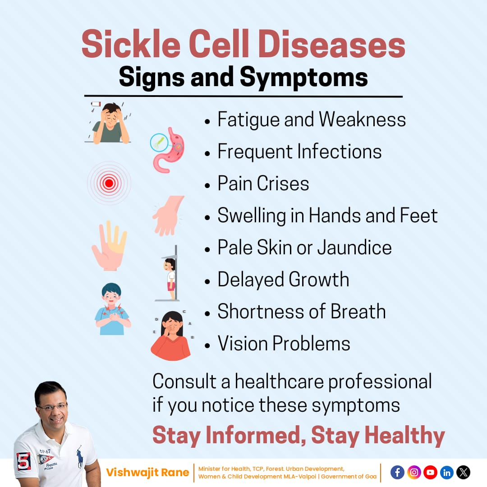

Symptoms
Symptoms of sickle cell anemia usually appear around 6 months of age. They vary from person to person and may change over time. Symptoms can include:
- Anemia: Sickle cells break apart easily and die. Typical red blood cells usually live for about 120 days before they need to be replaced. But sickle cells usually die in 10 to 20 days, leaving a shortage of red blood cells. This is known as anemia. Without enough red blood cells, the body can't get enough oxygen. This causes fatigue.
- Episodes of Pain: Periodic episodes of extreme pain, called pain crises, are a major symptom of sickle cell anemia. Pain develops when sickle-shaped red blood cells block blood flow through tiny blood vessels to the chest, abdomen and joints. The pain varies in intensity and can last for a few hours to a few days. Some people have only a few pain crises a year. Others have a dozen or more a year. A severe pain crisis requires a hospital stay.
- Swelling of Hands and Feet: Sickle-shaped red blood cells block blood circulation in the hands and feet, which can cause them to swell.
- Frequent infections: The spleen is important for protecting against infections. Sickle cells can damage the spleen, raising the risk of developing infections. Babies and children with sickle cell anemia commonly receive vaccinations and antibiotics to prevent potentially life-threatening infections, such as pneumonia.
- Delayed Growth or PubertyRed blood cells provide the body with the oxygen and nutrients needed for growth. A shortage of healthy red blood cells can slow growth in babies and children and delay puberty in teenagers.
- Vision Problems: Tiny blood vessels that supply blood to the eyes can become plugged with sickle cells. This can damage the portion of the eye that processes visual images, called the retina, and lead to vision problems.
When to see a doctor
See your healthcare professional right away if you or your child has symptoms of sickle cell anemia, including fever or stroke.
Infections often start with a fever and can be life-threatening. Because children with sickle cell anemia are prone to infections, seek prompt medical attention for a fever greater than 101.5 degrees Fahrenheit (38.5 degrees Celsius).
Seek emergency care for symptoms of stroke, which include:
- One-sided paralysis or weakness in the face, arms or legs.
- Confusion.
- Difficulty walking or talking.
- Sudden vision changes.
- Unexplained numbness
- Severe headache
